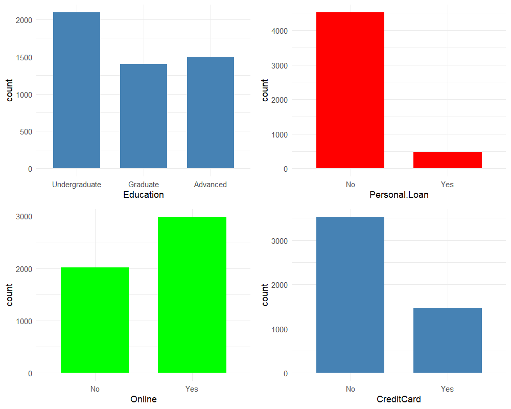
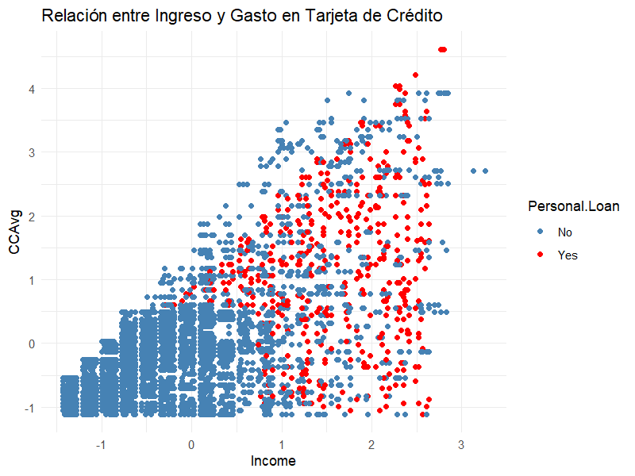
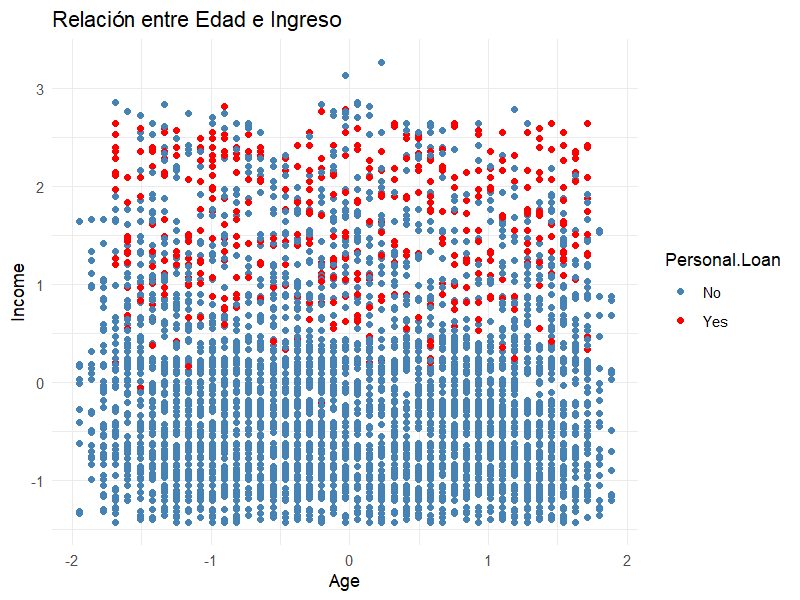
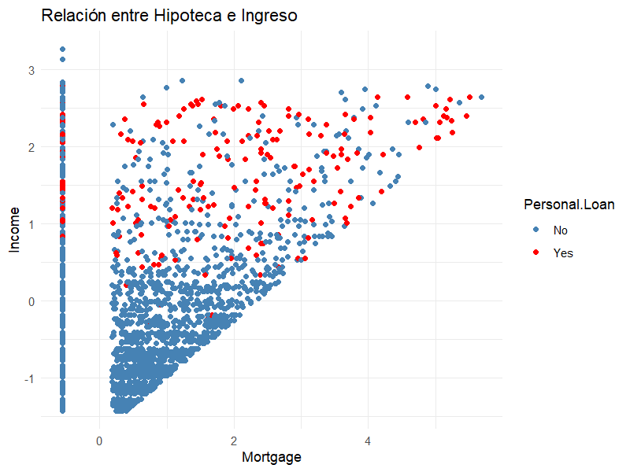
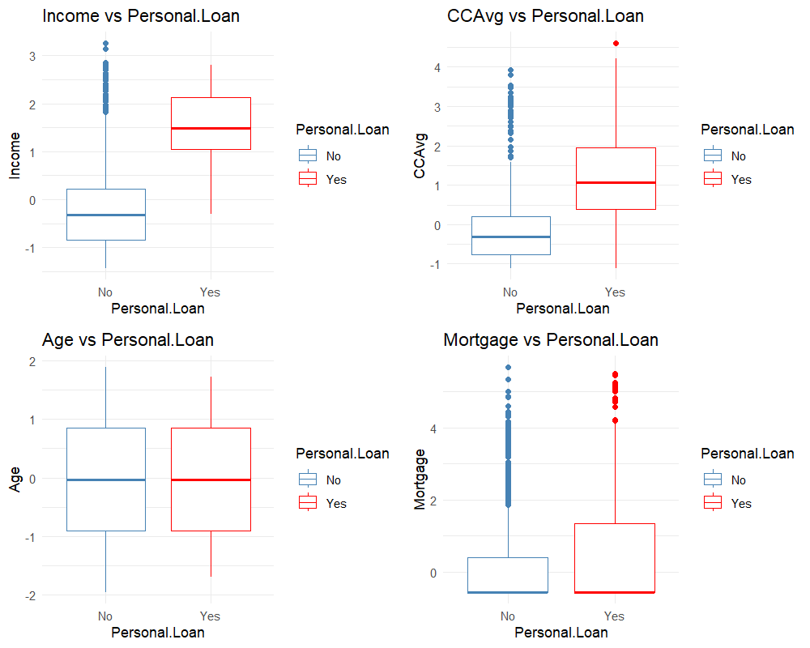
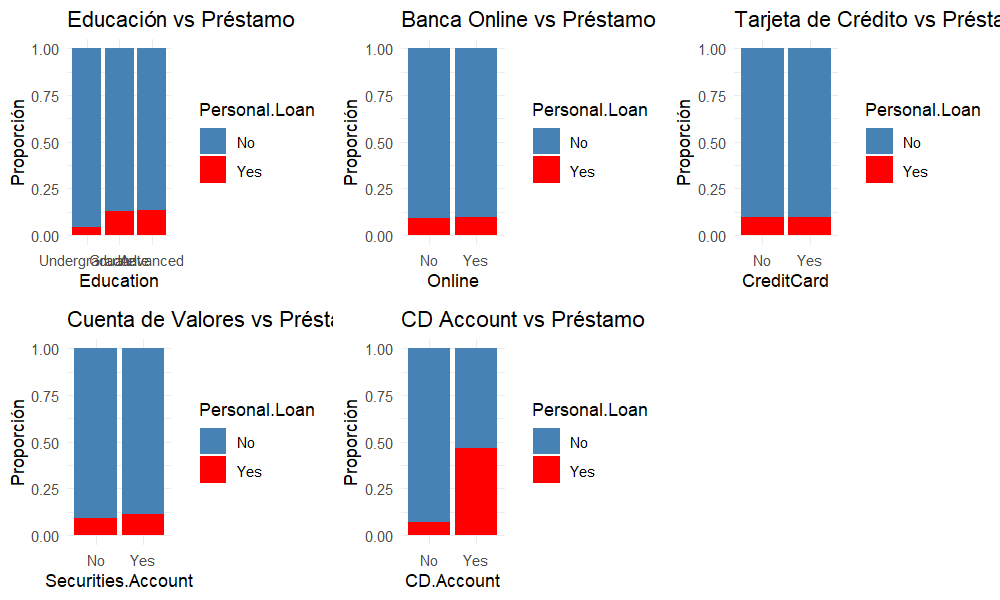
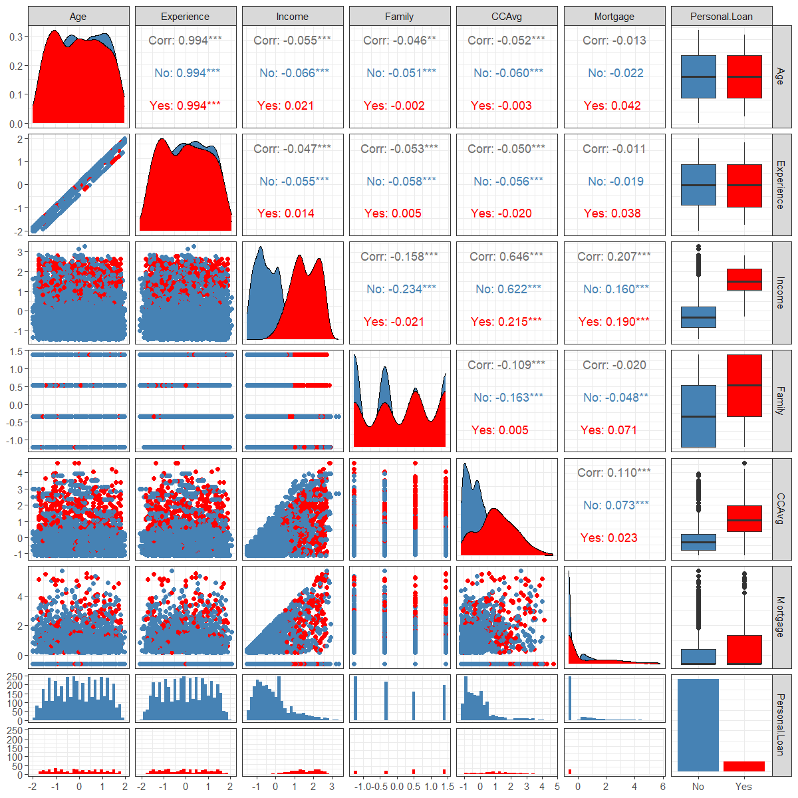
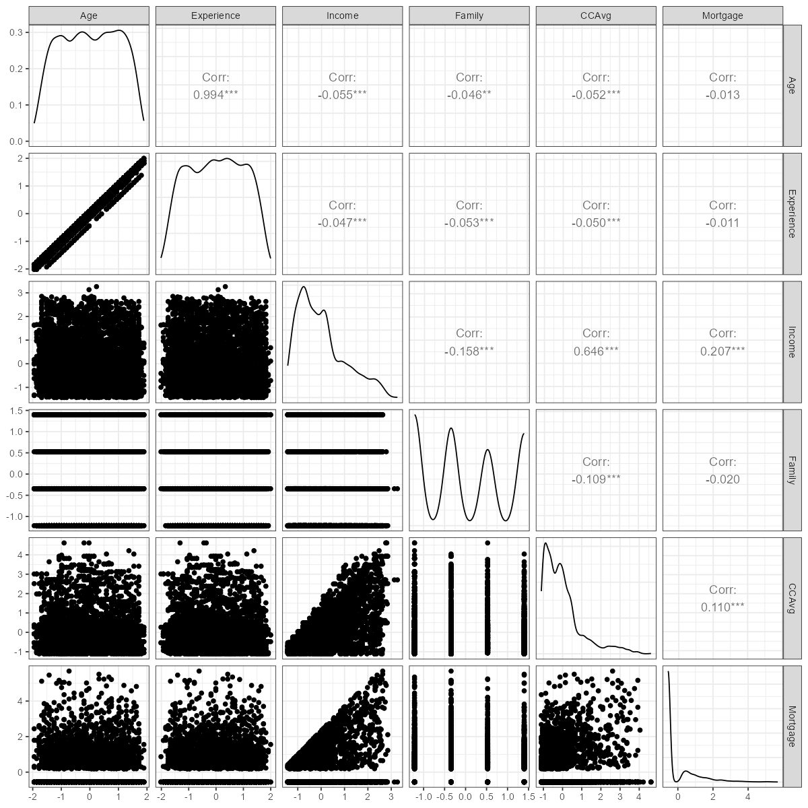
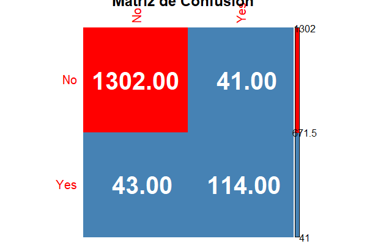
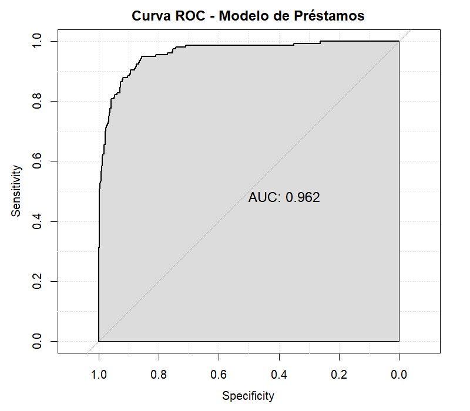

Análisis completo de 5.000 clientes bancarios para identificar los factores determinantes en la aceptación de préstamos personales.
El recorrido completo del estudio, desde los datos hasta las conclusiones.
Age · Edad
Experience · Años de experiencia
Family · Tamaño familiar
Education · Nivel educativo
Income · Ingreso anual
CCAvg · Gasto mensual en tarjeta
Mortgage · Valor de la hipoteca
Securities Account · Cuenta de valores
CD Account · Certificado de depósito
Online · Banca en línea
CreditCard · Tarjeta de crédito
Personal.Loan — Indica si el cliente aceptó (Yes) o no (No) el préstamo.
● Education → factor (3 niveles)
● Personal.Loan → factor (No / Yes)
● Variables binarias → factor
● CCAvg → numeric (1/60 → 1.60)
which(is.na(data_bank)) → integer(0) — No hay datos perdidos
| Variable | Media | Mediana | Mín. | Máx. | DE |
|---|---|---|---|---|---|
| Age | 45.34 | 45 | 23 | 67 | 11.46 |
| Experience | 20.10 | 20 | -3 | 43 | 11.47 |
| Income | 73.77 | 64 | 8 | 224 | 46.03 |
| Family | 2.40 | 2 | 1 | 4 | 1.15 |
| CCAvg | 1.94 | 1.5 | 0 | 10 | 1.75 |
| Mortgage | 56.50 | 0 | 0 | 635 | 101.71 |
Diagramas de barras generados con ggplot2.

Relación entre variables financieras y la aceptación del préstamo.




Proporción de aceptación según categorías.

Visualización multivariante con GGally.


| Variable | Estimate | Pr(>|z|) |
|---|---|---|
| Income | +2.773 | <2e-16 *** |
| Education (Graduate) | +3.967 | <2e-16 *** |
| Education (Advanced) | +4.070 | <2e-16 *** |
| CD.AccountYes | +3.841 | <2e-16 *** |
| OnlineYes | -0.756 | 5.22e-06 *** |
| CreditCardYes | -1.032 | 1.30e-06 *** |
| Family | +0.708 | 1.14e-15 *** |
Efecto de cada variable al ser añadida al modelo.
| Variable | Deviance | Pr(>Chi) |
|---|---|---|
| Income | 1157.88 | <2.2e-16 *** |
| Education | 469.67 | <2.2e-16 *** |
| Family | 195.38 | <2.2e-16 *** |
| CD.Account | 109.79 | <2.2e-16 *** |
| CreditCard | 26.20 | 3.08e-07 *** |
| Online | 14.82 | 0.0001 *** |
| CCAvg | 5.51 | 0.018 * |
| Mortgage | 2.80 | 0.095 |
Umbral ajustado a 0.3 por datos desbalanceados.


Indicadores clave del análisis de préstamos bancarios.
Income — Mayor ingreso = mayor probabilidad
Education — Nivel avanzado aumenta la probabilidad
CD.Account — Tener CD Account incrementa la probabilidad
Family — Mayor familia → mayor probabilidad
Online — Usar banca online REDUCE la probabilidad
CreditCard — Tener tarjeta del banco REDUCE la probabilidad
Securities.Account — Tener cuenta de valores REDUCE la probabilidad
● Ingreso alto · ● Educación avanzada · ● Tiene CD Account · ● NO usa banca online · ● NO tiene tarjeta del banco